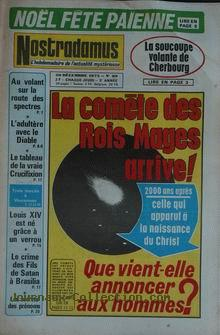

Nostradamus n° 89 du 20, titrant sur La soucoupe volante de Cherbourg

Vague d'observations en France.
Observation de M. G. Jean et de son fils sur la
plage de Carteret (Normandie). Le ven 07, des gens trouvent sur une plage voisine de celle
de Carteret un équipement de plongée complet, avec contrôleur de radioactivité, signaux sonores, pantalons et vestes
avec des étiquettes en anglais.
Dans les bois de Chambarant (France), à 2 km du lac de la
Trappe, un chasseur voit 1 énorme cigare survolant les collines à une vitesse vertigineuse et toujours dans le
silence le plus total "Une section de recherche sur les ovnis à Saint-Marcellin", Le Dauphiné Libéré, 20 mai 1974.
Depuis la colline Ste-Eutrope, dominant une bonne partie de ce secteur de provençal,
Max Maurin (capitaine de réserve de l'armée de l'air, habitant Orange dans le Vaucluse)
et épouse, très intéressés par les déplacements de la comète Kohoutek - à cette époque-là que la fameuse
comète était visible depuis une partie de l'Europe - scrutent le ciel depuis leur domicile lorsqu'ils distinguent
très nettement au-dessus de Marcoule (commune distante d'Orange de quelques dizaines de km), un peu au-dessus de
l'horizon, 1 lueur aux dominantes rouges, de la taille et de la forme d'un cigare, se déplaçant très lentement ; une
lueur beaucoup plus rouge brille à l'une des extrémités du phénomène, qui disparait vers 20:00, masqué par un écran de nuages Troadec, J.-P.: "'Les dossiers secrets' de l'Armée de l'Air française", RUP, 19 mars 2012.
Jean Liefoogue voit un cigare de 30 m de haut sur 5 m de large
se poser au bord de la Nationale 347 qui longe l'aérodrome de Lens (Pas-de-Calais). Dans un bruit, l'objet bascule
et disparaît en quelques secondes Facteur X 95-2562.